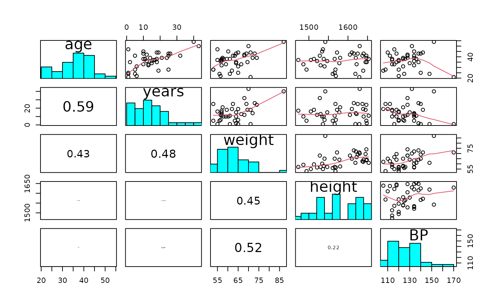

Plots pairwise scatter plots with histograms and correlations for the data
frame.
Usage
pairs20x(x, na.rm = TRUE, engine = c("base", "ggplot2"), ...)
Arguments
- x
a data frame.
- na.rm
if TRUE then only complete cases will be displayed.
- engine
plotting engine to use. The default, "base", preserves
the original base graphics output. Use "ggplot2" for the
ggplot2/GGally output.
- ...
optional arguments passed to the underlying plotting function.
Details
The default base graphics engine preserves the original s20x teaching plot and
draws directly on the active graphics device. The ggplot2 engine uses GGally
and returns a reusable plot matrix for reports or further customisation.
See also
'pairs', 'panel.smooth', 'panel.cor', 'panel.hist'
Examples
## Peruvian Indians
data(peru.df)
pairs20x(peru.df)

# ggplot2/GGally engine for a reusable plot matrix
pairsPlot = pairs20x(peru.df, engine = "ggplot2")
class(pairsPlot)
#> [1] "ggmatrix" "GGally::ggmatrix" "S7_object"